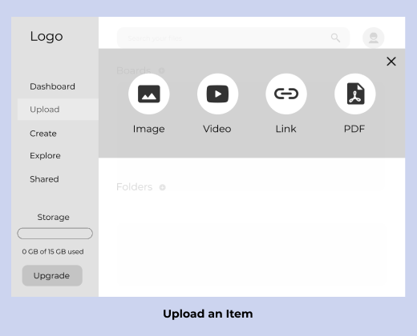

Happy Nomad
Happy Nomad is a cloud storage service that empowers users to save, share, create, and explore travel-related content all within one intuitive platform.
-
Design Roles
-
User Research
-
UX Design
-
Visual Design
-
Brand Identity
-
Deliverables
-
Competitive Analysis
-
User Survey & Personas
-
User Stories & Flows
-
Brand Style Guide
-
Wireframes
-
User Testing Analysis
-
InVision Prototype
-
Tools
-
Figma
-
InVision
-
Draw.io
-
Usability Hub
Problem
Travelers are using cloud storage services to upload pictures, create and share documents, discover resources, and organize their files. With multiple cloud storage services available it is possible for them to complete these tasks. However, there is a lack of an app that has all of these features within one platform. Users are left spreading different elements of their trip across different applications. This leads to a cumbersome and inefficient experience.
Solution
Happy Nomad aims to provide travelers a simple and intuitive experience. Empowering users with the ability to upload content, create and organize content, discover content from other users, and collaborate with others in one platform across desktop and mobile devices. Users also have the option to organize their files in an old-fashioned Folder or create a Board for a more visually appealing layout.
The Process
Competitive Analysis
What will be the competitive advantage?
To begin my research I analyzed the features of three top companies in the the cloud storage space. I was specifically looking through the lenses of their strengths, weaknesses, opportunities, and threats. These discoveries allowed me to develop assumptions on what users are missing in a cloud storage app that I could develop a solution for.
Google Drive gives users the ability to upload items. However, in order to create an item, a separate app needs to be accessed. This is especially problematic when using the app on a mobile device.
Pinterest has a distinct feature in allowing users to create moodboards which is unique and an aesthetically pleasing organization tool. However, they are limited in the file types they host, and they don’t have the ability for users to create their own content through the platform.

Dropbox has a simple and clean aesthetic, but it is also limited in the file types that can be created and uploaded within the platform. Additionally their platform contains buttons that aren’t clear in communicating what their function are.
From the competitor research I developed the following assumptions:
Users want the ability to upload various file types within the same platform.
Users want to be able to create content in different file types, and organize them in folders or moodboards.
Users want to explore content uploaded by other users.
Users want to share and collaborate with others, and receive notifications if changes are made.
User Survey
What do users really want?
Next, I distributed a user survey to airline workers, Facebook travel groups and some of my peers to test if my assumptions were credible. In addition, I used the survey to discover more details about what the right combination of features users think should be in the solution. Beyond the traditional features of a cloud storage app, users wanted more distinct features that would be beneficial for their travel related needs.
Features Users Want


- A mood board feature in order to bring together different ideas when planning a trip.
- A combination of a platform that allows them to discover travel content from others and also has tools to create documents or slideshows.
- The ability to share recommendations they save or discover with others.
- To see inspirational and informational content shared by other users.
- Another feature users wanted to have in regards to collaboration was the ability to receive notifications if changes have been made to an item, and to be able to share through social media, or emailing a link.
What Users Currently Enjoy About Competitors
- It’s easy to collaborate with others.
- It’s easy to access the app on different devices.
- Convenient to have all travel ideas in one place.
- It helps them sort through their travel ideas.
User Pain Points
Within the survey results I was also able to identify the pain points users are experiencing when using current apps. Most respondents used competitors I had already analyzed, including Google Drive and Dropbox. Knowing this information allowed me insight into what may be the objective for the app. In this stage I believed the app should offer the best features of competitors in a single platform, offer a better organization method, and be visually fun.
Too many different applications are needed.
Difficult to keep content organized.
Limited visually appealing templates to create content.
User Personas
Who is the target audience?
Using results from the survey I developed user personas. By looking for patterns, trends, and outliers in the data I created personas that showcased the shared goals, motivations, and frustrations of users. These personas further allowed me to see through an empathic lens as development continued.
This was a crucial step to define who the users are, the use cases, and why users would use this product. The shared goals below would become the staple features of the application.
- To upload and save content for future use in order to reference in the future and share with others.
- To plan traveling goals by viewing other users content in order to optimize their travel experiences, and being able to organize.
- To collaborate with others in real time for easier communication regarding travel plans.
Sage
The Enthusiast
Age: 26
Location: Bali, Indonesia
Occupation: Vitamin Sales Rep
Motivations
As a travel enthusiast Sage is constantly browsing the internet for ideas to fuel her travel aspirations. She wants to be able to save this information easily for future reference.
Frustrations
She isn't able to create her own content and see content from others users within the same platform.
Goals
Sage wants a dedicated space for her travels where she can find, create, save, and share content from wherever she may be in the world.
"I would love to have an app where I can both create idea boards and other types of content I can use for my blog."
Jesse
The Industry Professional
Age: 35
Location: Los Angeles, CA
Occupation: Airline Ramp Agent
Motivations
As an airline worker Jesse loves to take advantage of his flight benefits and is constantly saving and sharing websites, articles and products related to his travel plans.
Frustrations
He finds that he constantly has to switch between apps for different features.
Goals
Jesse wants to easily communicate and share with family, friends, and co-workers in real time regarding travel plans.
"It's important that the app make it easy for me to share content with a group so everyone can provide input, see updates, and share photos with each other."
User Stories
What is the scope of the MVP?
In step with the user focused design process, I looked back to the results of the user research to develop user stories. This step helped me get specific about the actions users would be taking, and what type of content they would be handling. Additionally, in order to keep the user’s perspective in consideration I put myself in the shoes of the user personas.
Doing this I was able to further refine, clarify, and prioritize these actions to define the scope of work. High and some medium priority user stories would be included in the minimum viable product, and while the remainder could be added in later phases.
User Flows
How will a user navigate the app?
Next I created user flows that would serve as a blueprint for my wireframes. This step influenced my design in that I was able to see how I could incorporate conventional trends, such as a social media friendly onboarding process. As well as where I could improve or add something different that made more sense for my target audience. For example, giving users the option to organize their content into a folder or a board.
Sitemap
Wireframes
How will a user navigate the app?
Since my target audience is always on the go, it was important they wouldn’t have to spend extra time trying to decipher the app. So to ensure it was simple and easy to maneuver I fleshed out ideas by sketching. With my information architecture and competitor research in hand I rapidly iterated layouts to determine which best aligned with my design goals.
Moving from research to the development phase
I had the following objectives in mind:
Design an intuitive dashboard where users can quickly upload, create, explore and share.
Implement an organizational design that includes boards and folders.
Provide an easy and quick onboarding experience with the option to sign up with social media.
Start off with MVP showcasing the high priority features and some medium priority features.
After deciding which layout would be the best solution I made a digital iteration of low-fidelity wireframes.
Usability Testing
How are users interacting with the design?
Using the digital wireframes I created a clickable prototype. I then conducted the first round of usability testing. I asked users to complete specific tasks which included, signing up, uploading an item, and organizing a folder.
Here are some of the key findings:
- Participants easily recognized this app is travel related and what features they would be able to use with the app.
- The sign up task was the easiest and quickest for both participants to complete.
- Participants were unsure if the item had actually uploaded. Therefore I will be adding a screen that displays an upload confirmation notice.
- One particpant was confused during the organization task. As the function only allowed them to send files to other folders. They wanted to be able organize files within the folder and didn’t understand why they couldn’t.
This testing proved to be very informative. Problem areas were brought to the forefront. As I was able to see parts of the upload and organize flows I had missed.
Moving forward I knew I needed to revise the prototype to include success complete notifications within the flows for uploading, creating, and organizing items. Implementing this would increase the clear communication I was aiming to create with the user. To solve the second problem I would re-design the organize flow to include an option to organize within the current folder.
Visual Identity
What are the brand's values?
I then focused on creating a brand identity for the application. I started to determine what the brand’s values would be by creating a moodboard and word list. The core values chosen were joy and playfulness of traveling. The name is meant to describe the users as they use the service. It’s so simple and helpful they can’t help but be happy on their travels.
It was challenging creating a logo that would convey these values without making it too cartoon like. I eventually landed the perfect combination that utilized negative space to create a smile and a hot air balloon icon.
For the color palette yellow and blue were chosen to convey warmth and security. Elements like buttons, icons, and fonts were given rounded corners to avoid any harshness. During content strategy development a focus was put upon gathering images that were traveled related but showcased the same feeling of joy.
For typography it was important to choose a font that felt more soft and rounded. It was also important that the fonts have a simple modern feel and be easy to read.
Mockups
Does it all work together?
Applying the branding to the wireframes, I created a high fidelity mockup. Leveraging the content within the moodboard I referred back to it as a reminder of the feelings I wanted to convey in the final design.
I was able to pull inspiration for different imagery and experiment with different iterations for the visual design. An additional focus of the visual design was to provide a good user experience by maintaining consistency. I utilized style to educate users by establishing expectations through elements like buttons and links.
The images below illustrate how I iterated with variations of color, opacity, and size. This is how I reached a design solution that had the optimal legible contrast, visual hierarchy, and clean aesthetic.
Upload an Item
A/B Testing
How will the app look?
Despite, overall success in the functionality of the applications features. I still was unsure about some elements of the visual design. The visual design still lacked the bright and joyful tone I was trying to convey. So using A/B testing I was able to see what users would prefer and why.
Pictured below is one test that was used to determine the best color for the call to action buttons. 50% of respondents chose the blue button, and said the red button felt too alarming like something was wrong. The remaining 50% chose the red button because they felt the blue button was not eye catching enough. Despite the split result, I was able to use the feedback to find a compromise between the two colors by using hot pink. A color that is both eye-catching but doesn't evoke alarm.
Solution
Additional test results led me to also change:
- My hero image to a photo featuring a real person with a joyful expression.
- The upload and create option screens would be opaque and hide the side dashboard so users could focus on the task at hand.
Final MVP
Was the objective met?
A final round of usability testing was conducted with the results showing that each task was completed in under 60 seconds with virtually no questions. Users said everything was clearly labeled which made it simple to use. After a few few more visual tweaks to align the branding with the spirit of Happy Nomad, the minimum viable product was complete.
Conclusion
What did I learn?
Despite having some doubt that there would be a way to offer a unique cloud storage service, due to the space being crowded. However, it was helpful to evaluate competitors, and discover that they were under serving the traveling market. This research helped immensely in creating a distinguishable competitive advantage. In further development of the application I recognized the importance of having a thorough survey. It provided invaluable insight and details from users that I served as strong foundation for the application, and that I could refer to at different stages.
Another key insight I learned through working on this application is that testing is the best way to silence your inner critic. Due to the endless options available in design overthinking can go into overdrive. However, clarity quickly comes when you see a real user navigate the application.